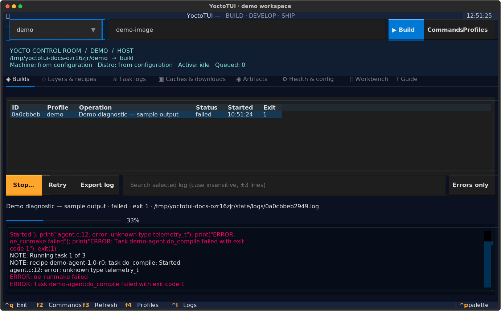
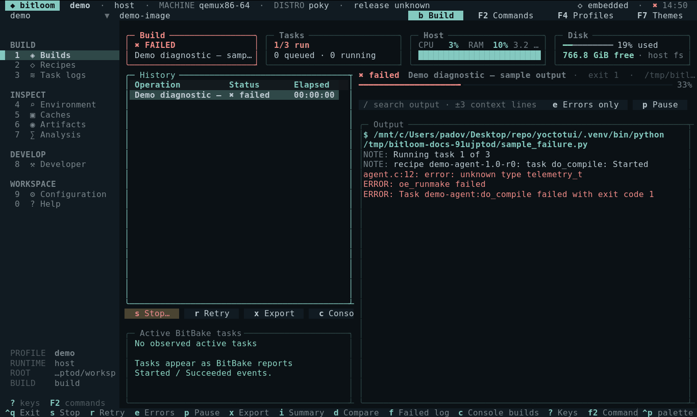

Build control
Serial queue, original-profile retries, task progress, persistent history, SDKs and per-recipe tasks.
A practical cockpit for BitBake builds, recipe development, layer inspection and the logs you need when something breaks.

Browse metadata, queue work and inspect evidence without losing the context of your build profile.
Serial queue, original-profile retries, task progress, persistent history, SDKs and per-recipe tasks.
Local recipes, appends, classes and YAML. Ask BitBake about active layers, overlays and dependencies.
Modify, build, finish and upgrade recipes. Deploy to devices. Hand off to devshell, kernel menuconfig or QEMU.
Streaming build output, task logs, complete-file searches with context, error filters and exportable reports.
Inspect size and age. Audit downloads. Preview concrete prune plans and recheck each file before deletion.
Resolve and compare environment snapshots, browse dependency edges, inspect signatures and buildhistory changes.
Host, kas, fresh or existing containers and kas-container. Named profiles preserve the command's configuration.
Let a build finish, request a graceful stop where supported, or force termination and select recipe recovery.
Repository versions, layer-series checks, image artifacts, licenses and command entry points for tests and security classes.
No matching capability. Try a broader term.
Explore all 69 built-in operations →Start with the sample workspace, then configure a real project with F4. The demo creates metadata only; real commands still need their tools.
Requires Python 3.10+ on Linux or WSL2. A 140 × 42 terminal displays the complete layout.
python3 -m venv .venv
source .venv/bin/activate
pip install -e .
yoctotui --demoSource an init script automatically or run from your existing environment. Every target is passed as a quoted argument.
{
"name": "host",
"root": "/work/poky",
"build_dir": "build-qemu",
"mode": "host",
"init_script": "oe-init-build-env"
}Full schema and path rules: user guide · Copy-ready profiles: profile examples
Choose a profile, enter a target, press F2 and filter the action list. Queue a normal build, compile task, dry run or SDK. The history row records the original profile and exact exit result.
Select the failed history row. Toggle Errors only or search a phrase with context. Open Task logs for the recipe's own compile/fetch log. Export the complete original log or open a concise build report.
Find a recipe in Layers & recipes, choose Modify, and use devtool build while editing its sources. Finish into the selected layer when ready. Interactive commands use your real terminal.
Let finish leaves the build running. Graceful stop sends one SIGINT to a host client or a newly managed container and waits. Force terminates and offers clean for observed active recipes. External wrappers require server verification before recovery.
Scan the cache, filter files, select an age and review the concrete prune plan. No automatic deletion. Externally shared caches require coordination. Fetch tasks validate recipe sources with BitBake's checksums.
Resolve two environment snapshots for a target and compare their values. Load generated dependency edges. Inspect buildhistory diffs and local repository versions. Keep release builds in separate profiles/directories.
These captures come from the running Textual app using its Pilot driver. They show a sample workspace, not a claimed successful image build. Click a screenshot to enlarge.

Unit/UI tests cover command quoting, queueing, history, cancellation, metadata, cache boundaries and interface interaction. The opt-in integration runs core-image-minimal for qemux86-64 from pinned Poky metadata through the same Runner and kas-container.
Class-dependent actions need matching release configuration. Cache inventories and dependency graphs are bounded. Layer compatibility parsing is advisory; BitBake metadata parsing is authoritative.